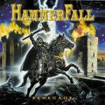

|
|
||
Hammerfall : Renegade (2000) |
|

http://www.hammerfall.net |
1. Templars of Steel 5:25 |
7.5/10 |
|
Renegade es el esperadísimo tercer disco de la banda sueca Hammerfall. Tras su fantástico segundo álbum, Legacy of Kings, se esperaba mucho de este disco y lo cierto es que cuando se espera mucho de algo muchas veces uno queda defraudado. Y no es que este disco sea malo, sencillamente es que no es otro Legacy of Kings. El disco cuenta con los ingredientes típicos de la música de Hammerfall, que son los mismos ingredientes que el power metal de corte épico más tradicional: una voz que si bien no es lo contundente que en ocasiones debería, si es capaz de alcanzar tonos muy altos, batería alegre, incluyendo como no doble bombo, y por supuesto guerreros, batallas, héroes y villanos. Pero a este disco le falta un coro como el del "Heeding the Call", primer corte del Legacy of Kings, un potente estribillo como el de "Legacy of Kings", o una canción como "Let the Hammer Fall", otra de los momentos estelares de aquel fabuloso trabajo. "Templars of Steel" comienza el disco a ritmo lento, pero con la fuerza que le imprimen las guitarras, notablemente convincentes. El coro a varias voces del estribillo tiene el típico sonido de Hammerfall, pero a éste si le falta algo de fuerza. "Keep the Flame Burning" acelera notablemente el ritmo con la introducción del doble bombo, aunque la canción resulta menos potente que la primera. Lo que si aparece es un gran solo de guitarra, de sonido por cierto muy clásico, algo que podrían haber tocado por ejemplo Iron Maiden. "Renegade" es quizás la mejor canción del disco. Un estribillo memorable, ritmo rápido sin necesidad de enchufar el doble bombo desde el principio al final de la canción, algunos riffs de guitarra de los que construyen grandes canciones y una parte instrumental no apta para corazones débiles. En el cuarto corte, "Living in Victory", la voz de Joacim Cans, se va a la parte alta de su registro. El ritmo es de nuevo rápido y el estribillo bastante melodioso y pegadizo. "Always Will Be" es la balada del álbum. Las guitarras sin distorsión llevan el peso de la melodía. La voz es suave y canta con sentimiento. La batería apenas aparece. La sexta canción, "The Way of the Warrior" recupera la fuerza, aunque el ritmo no es excesivamente rápido. El estribillo es bastante interesante, con una alternancia entre voces a coro y la voz de Joacim Cans. "Destined for Glory" es la canción con aire más épico del disco seguramente gracias a su majestuoso comienzo. El estribillo es de los mejores del álbum. "The Champion" es una canción sin mucho que aportar al disco salvo un estribillo que no está mal y unos solos de guitarra que la salvan de la monotonía. "Raise the Hammer" es una canción instrumental de ritmo trepidante y guitarras cortantes. Riffs elaborados, como corresponde a una canción donde todo lo dicen las guitarras, y cambios de ritmo para mantener la atención y evitar caer en la monotonía. Gran canción. Aunque lo cierto es que las canciones instrumentales son mi debilidad. El disco termina con "A Legend Reborn", otra de las de ritmo moderado y cierto aire medieval, apoyado en ciertos momentos por las guitarras acústica. |
||
Rubén Béjar |
||